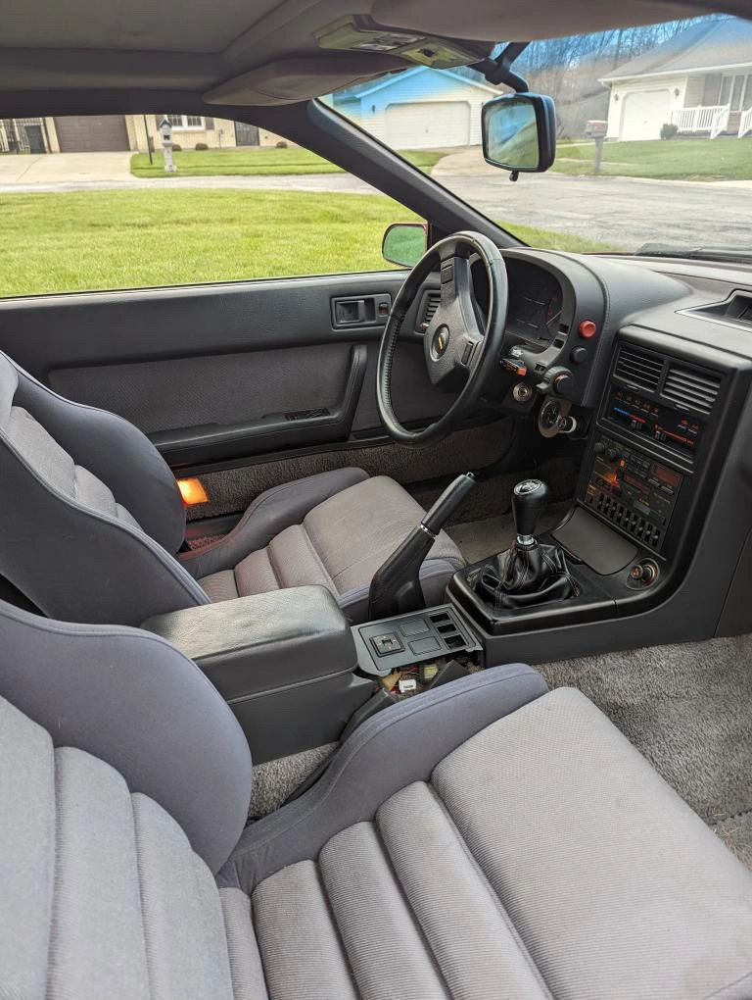
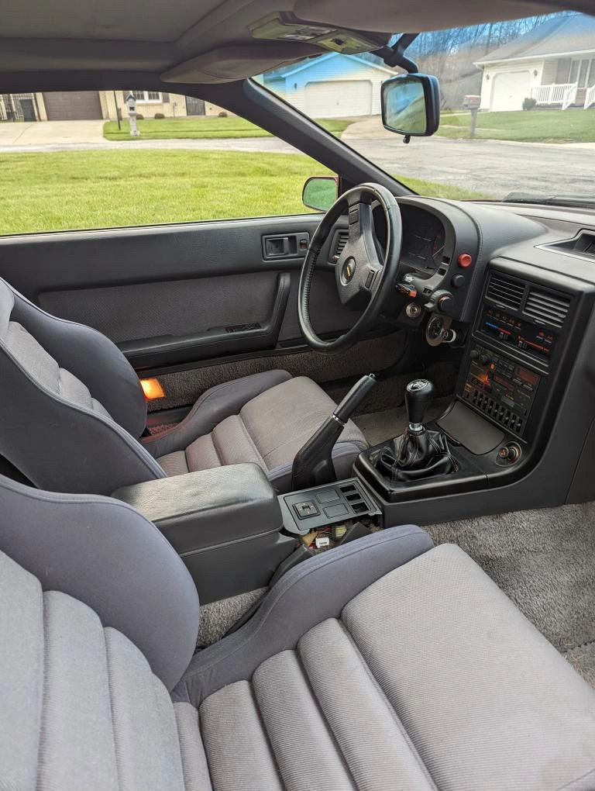

Project: The Turbo II RX-7

An Introduction to Rotary
Rotaries are an engine that has interested every gear head since their creation became widespread. Many of them just leave it at a curiosity, not quite understanding how they work or falling for the old stereotypes of lack of reliability. Some of them decide to step out and dive head first into these mechanical masterpieces, and take on the challenges these motors give but also reap the immense satisfaction that is offered if one puts in the time and effort to learn, understand, and take care of this incredible creation.
My introduction into rotaries came at a slow pace. I didn’t learn of the design, and immerse myself into the deep pool of knowledge that is able to be discovered on thousands of forum posts, Instead I took little sips from that pool. Rotaries were first introduced to me when I was looking for my first car. A classmate of mine brought up the idea of buying an rx8 (mostly due to the looks and not really because of the engine), and after a little bit of research learned of the 1.3 renesis motor that they contained. Of course that research was met with tons of articles explaining how great the car handled but how unreliable the motor was. So naturally being a poor high school student I tossed that idea aside and went another direction.
Flash forward a few years to Morrisville State College, where I was majoring in Agricultural engineering, Professor Ax brought up the rotary motor in small engines class. This was just a quick explanation of how they operated but it was enough to perk my interest again, and enough to convince me to start to dip my toes into the pool of rotaries. Eventually coming to the conclusion that I needed to own one and that I wanted a FD. Naturally, I quickly learned that an FD wouldn’t be affordable for a college student working part time. So I started my search for other options.
Striking Rotary Gold
In April of 2022 I struck rotary gold. Gavin had sent me a post of a FC turbo II for sale near us in Ohio, it was running, driving, reasonably priced, and best yet less than 50,000 miles! The only downside was that someone else beat me to the deal. Fortunately for me the gentleman who owned it was willing to negotiate for a bit higher price as long as I picked it up the next day. So Gavin and I hopped in my Rav4 and made the journey to snag this beautiful piece of mazda manufacturing.


Being my first time driving a Turbo rotary I instantly fell in love. The car was mostly stock except for a F-Con piggy back ECU, HKS blow off valve and a HKS exhaust. Running about 12 pounds of boost, the car had a nice little hit to it and was a blast to drive.
 


Summer in New York
That summer I trailed the car back to my home in Western NY where I continued to drive it in that condition putting on a few thousand miles and enjoying every second of it.

The Journey West & Future Plans
In the Summer of 2023 I made the move to Bend, OR and naturally the car came with me.

Throughout the past couple summers in Bend The car has definitely become a weekend warrior. Going out on short drives, visiting cars and coffee, but over all it has been spending most of its time sitting parked. The hot Oregon sun has not been too favorable to the paint, and the motor has developed an oil consumption issue.
However there are some big plans in store for this car, maybe a street port? Custom exhaust manifold to sit a bigger turbo? New paint job? Only time will tell, so stay tuned for the build and the work that is about to go into it.